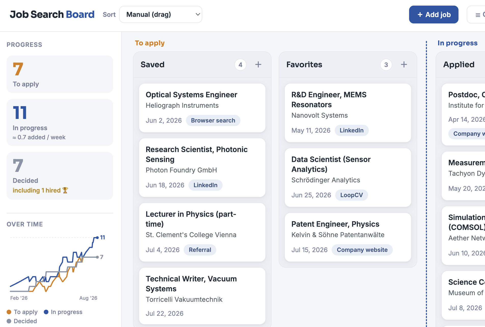

Thanks for visiting my Github Page! Here, you will find some information about me and examples of my creative projects I am building with a bit of coding and AI.
Vienna & Bratislava · Available now
What I have built
Job Search Kanban Board
To help me with my job search, I made a Kanban board. Press the gree button to download it for yourself!

Job Search Kanban BoardInteractive physics notebook
I turned a PDF version of my previous PI's book into an interactive Mathematica Notebook with the help of Claude Code to expedite the process.

Wolfram Mathematica
Learn Slovak prefixes
I built a page for learning what prefixes mean for certain nouns and verbs in Slovak according to my own linguistic convention.
About me
I am an experimental physicist with roughly fifteen years in research and teaching across three countries. I spent seven years as a postdoctoral researcher at the Institute of Sensor and Actuator Systems (ISAS) at TU Wien, contributing to both the lab's research and to its teaching mission.
My doctoral work was in ultrafast multi-pulse absorption spectroscopy of light-harvesting systems, where I developed a kinetic modeling and regression code which made distinction of coupled energy transfer and charge transfer dynamics in natural photosynthesis possible.
My teaching experience spans graduate level to high school: engaging graduate lecturing, curriculum redesign, doctoral research mentoring, undergraduate physics laboratory instruction and outreach work in science. I have mentored multiple doctoral students to publication and successfully defended presentations at international conferences.
English is my native language, I speak Slovak, and my German is at B1 and improving.
Selected publications
23 peer-reviewed articles · six first-authored · full list on ORCID